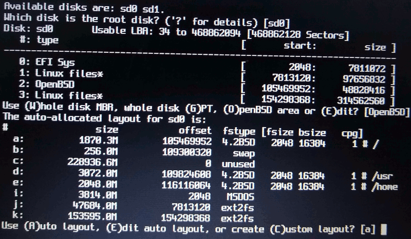

TLDR
Al instalar OpenBSD junto a Debian (multiboot) en un disco con tablas de particiones GPT y un BIOS que utilize UEFI:
- Utilizar una única partición encriptada para OpenBSD.
- Que el tamaño de la partición para OpenBSD sea por lo menos de 150GB.
En estos días quise probar de instalar OpenBSD. Entre los motivos se encuentran:
-
Probar un sistema que fué diseñado (cualquier sistema basado en BSD) como alternativa de uno cuyo crecimiento fué orgánico (cualquiera basado en GNU/Linux).
-
Utilizar un sistema (OpenBSD) que tiene entre sus máximas la simplificación en lugar del agregado de funcionalidades. Recordando la famosa cita de Saint-Exupéry:
La perfección no se alcanza cuando no hay nada más que añadir, sinó cuando no hay nada más que quitar.
Actualmente mi PC -laptop, en realidad- tiene el disco con una tabla de particiones GPT en el que está instalado Debian con grub e inicia mediante UEFI.
En el disco se deja una partición de 150GB para instalar OpenBSD. Para bootear el sistema se configurará grub desde Debian, por lo cual no es una instalación que dependa 100% de OpenBSD.
Antes de empezar conviente tener claro la diferencia entre las particiones de disco (MBR) y las filesystem partitions tal como se indica en las FAQ de OpenBSD:
The term "partition" can mean two different things in OpenBSD:
- disklabel(8) partitions, also called filesystem partitions.
- fdisk(8) partitions, sometimes called Master Boot Record (MBR) partitions.
Soporte de hardware
Si bien no hay muchas indicaciones de que equipos están soportados por OpenBSD, lo que se lee en varias web's es la mención:
si se instala y funciona va a funcionar bien
El hardware en que instalaré OpenBSD es una Lenovo Thinkpad T440s que se indica en varios foros y blogs que está dentro de los equipos mejor soportados.
Layout del disco
Como se mencionó anteriormente, el disco posee una tabla de particiones GPT, en lugar de una de tipo MSDOS recomendada en las FAQ de OpenBSD. El layout del disco es el siguiente:
- efi, EFI System (fat32). Necesaria por el bios para iniciar con UEFI
- boot, ext4. Utilizada por grub (es allí donde están instalados los archivos utilizados por grub) y además necesaria por el sistema Debian, ya que allí se encuentra el kernel y la imagen initrd necesarias para iniciarl dicho sistema.
- debian, crypo_LUKS + LVM. Sistema Debian en partición encriptada.
- openbsd, unformatted. Espacio en que se instalará OpenBSD.
- data, ntfs. Partición que se utilizará para compartir datos entre el sistema Debian y el OpenBSD.
NOTA 1: Hay que recalcar que el sistema Debian es imprescindible para configurar el inicio del sistema OpenBSD, ya que este no cuenta con herramientas para iniciar desde un sistema UEFI.
NOTA 2: Se utiliza la partición de tipo ntfs ya que en varios blogs y foros se indica que es la que mejor funciona con OpenBSD (¿quizás tenga que ver con que tanto las distribuciones GNU/Linux como OpenBSD utilicen el paquete ntfs-3g?).
Preparación de pendrive con instalador de OpenBSD
Para preparar el pendrive hacer (desde el sistema Debian):
$ wget 'https://cdn.openbsd.org/pub/OpenBSD/6.7/amd64/install67.fs'
$ wget 'https://cdn.openbsd.org/pub/OpenBSD/6.7/amd64/SHA256'
$ sha256sum -c --ignore-missing SHA256
$ sudo dd if=install67.fs of=/dev/sdb1 bs=1M
¿Porqué se utiliza sdb1?. Debido a que corresponde al pendrive
conectado al sistema.
Pasos previos a la instalación
Se inicia el sistema desde el pendrive y se elige la opción Shell para preparar el disco para encriptación como es sugerido en la FAQ de OpenBSD.
Creación del archivo /dev/sd0
Se comienza creando el archivo especial de dispositivo sd0 utilizando el script MAKEDEV para referenciar posteriormente al disco duro:
$ cd /dev && sh MAKEDEV sd0
¿Porqué se utiliza sd0?. Porque corresponde al dispositivo de bloques
detectado por el kernel. Esto se desprende de la salida del comando
dmesg | grep ^sd.
Setup de partición para OpenBSD
Si bien hay varios programas en Debian que permiten establecer el tipo de la partición que utilizará OpenBSD, conviene para estar seguros realizar este paso utilizando el programa fdisk de OpenBSD:
$ fdisk -e sd0
➊ print g # se ven las particones
➋ setpid 2 # A6 (OpenBSD)
➌ write
quit
En ➊ se listan las particiones del disco, más que nada para asegurarse en un
sistema con varios discos que estamos modificando el indicado. En ➋ se cambia
el identificador de la tercera partición -correspondiente a OpenBSD- al tipo
A6 (OpenBSD); como se puede ver aquí la numeración de las particiones
comienza en 0 y no en 1. En ➌ se escriben los cambios al disco, ya que
por defecto al salir no se almacenan los cambios.
Nota: Inicialmente también se marcó la partición como booteable utilizando
flag 2 previo al comando write, pero esto hace que si el bios está
configurado para utilizar UEFI + legacy, el bios inicia en el sistema
OpenBSD, salteandose grub por lo que no es una buena idea.
Escritura de datos aleatorios en la partición (opcional)
En las FAQ también se indica que es conveniente escribir datos aleatorios en la partición (siempre teniendo en cuenta el tipo de adversario que se tenga en mente).
A diferencia de las FAQ en las que se escriben datos aleatorios a todo el disco
(rsd0c), en nuestro caso queremos escribir datos aleatorios solo en la
partición destinada a OpenBSD.
Para ello primero hay que crear una partición (disklabel) de OpenBSD que ocupe todo el espacio destinado a OpenBSD para luego poder sobreescribir dicha partición con datos aleatorios:
$ disklabel -E sd0
➊ p g
➋ a a
➌ w
q
En ➊ se muestran las particiones utilizadas por OpenBSD. Hay que tener en
cuenta que deben existir la partición c que indica todo el disco y las
particiones i, j y k que corresponden a las particiones efi, debian y
data respectivamente.
En ➋ se crea una nueva partición (de filesystem). Siguiendo los defaults se
crea una partición (de filesystem) para uso de OpenBSD de nombre a que ocupa
todo el espacio asignado para OpenBSD.
En ➌ se escriben los cambios a disco, ya que al salir por defecto no se realizan
cambios.
Una vez que se tiene creada la partición (de filesystem) se puede escribir datos aleatorios utilizando
$ dd if=/dev/urandom of=/dev/rsd0a bs=1m
Lo anterior borra la información de la partición, por lo que es necesario volver a recrearla.
Creación de partición encriptada para OpenBSD
Siguiendo la indicación de las FAQ, se crea la partición (de filesystem) de tipo RAID (este paso es idéntico al de la FAQ):
$ disklabel -E sd0
➊ p g
➋ a a
➌ w
q
En ➊ listamos nuevamente las particiones (de filesystem) para asegurarnos que estamos haciendo correctamente los cambios. En ➋ creamos una nueva partición que debe ocupar todo el espacio asignado a la partición (de disco) para OpenBSD. Cuando se deba ingresar el tipo de filesystem hay que introducir RAID. Por último, en ➌ se guarda la información en disco antes de salir del programa.
➊ $ bioctl -c C -l sd0a softraid0
➋ $ cd /dev && sh MAKEDEV sd2
➌ $ dd if=/dev/zero of=/dev/rsd2c bs=1m count=1
En ➊ se utiliza bioctl para configurar el filesystem creado de tipo RAID e indicar que será un filesystem encriptado. Luego, en ➋ se crea el archivo especial del dispositivo.
¿Porqué se utiliza sd2?. Porque corresponde al dispositivo de bloques
agregado al sistema al utilizar bioctl que es mostrado en la salida del
comando.
Siguiendo las indicaciones de la página del manual de softraid, en ➌ se borra la información al principio del disco antes de usarlo.
Ahora puede instalarse el sistema en sd2. Hay que recordar que en este caso
sd0 corresponde al disco duro (ssd) y sd1 al pendrive con el sistema.
Se utiliza exit para salir del shell y continuar con la instalación normal.
Pasos durante la instalación
Se continúa la instalación normalmente, pero al momento de instalar el sistema debe elegirse sd2 como disco a utilizar.
Pasos posteriores a la instalación
Extracción de bootloader UEFI
Luego de finalizada la instalación pero antes de reiniciar el equipo hay que guardar el bootloader UEFI de OpenBSD en la partición EFI System.
Para copiar los archivos hacer:
# mkdir -p /mnt2
# mount /dev/sd0i /mnt2
# mkdir /mnt2/EFI/OpenBSD
# cp /mnt/usr/mdec/BOOTX64.EFI /mnt2/EFI/OpenBSD
Y luego utilizar reboot para reiniciar el sistema.
El sistema se reiniciara en Debian, ya que aún no se configuró el bootloader
para cargar OpenBSD.
Configuración de grub en Debian
Luego de reiniciado el sistema y ya en el sistema Debian se debe configurar grub para que se agregue al menú la opción de iniciar OpenBSD.
Para ello se creará el archivo 40_openbsd y se agregará al directorio
/etc/grub.d/40_openbsd:
$ sudo cp /etc/grub.d/40_custom /etc/grub.d/40_openbsd
$ cat <<'END' | sudo tee -a /etc/grub.d/40_openbsd
menuentry "OpenBSD" {
insmod part_gpt
insmod chain
set root='(hd0,gpt1)'
chainloader /EFI/OpenBSD/BOOTX64.EFI
}
END
NOTA: No se utiliza el archivo /etc/grub.d/40_custom para evitar que este
sea sobreescrito en una actualización de grub.
Para hacer efectivos los cambios hay que actualizar la configuración de grub:
$ sudo update-grub
Configuración de entrada UEFI (opcional)
Si quiere agregarse una entrada para iniciar OpenBSD utilizando UEFI se puede,
mediante efibootmgr agregar la siguiente linea:
$ sudo efibootmgr -c -d /dev/sda -p 1 -w -L openbsd -l '\EFI\OpenBSD\BOOTX64.EFI'
Para confirmar que esta fué agregada correctamente (y ver todas las entradas disponibles) utilizar:
$ sudo efibootmgr -v
Conclusiones
Bueno, debo admitirlo, hace AÑOS que no transpiraba tanto al realizar la instalación de un sistema operativo teniendo otro en el disco.
La instalación funcionó sin problemas como se mencionaba en las FAQ y en varios blogs, pero sin duda el uso de disklabel por parte de OpenBSD y la falta de conocimiento sobre este hizo la experiencia poco placentera. No por algo se indica en las FAQ
Otro punto a tener en cuenta es la cantidad de espacio en disco necesaria si se
desea realizar un particionado por defecto (usando
AUTOMATIC DISK ALLOCATION)
y tener un buen espacio en la partición correspondiente a /usr/local, donde se
almacenarán los paquetes en OpenBSD. 150GB para comenzar a probar quizás sea
un poco bastante, por lo que sugiero que si no se está convencido se comience
probando con una máquina virtual en linux y utilizando una partición única.
Aunque con esto se pierden características de seguridad en el sistema, para
comenzar a probar OpenBSD creo que es un buen compromiso.
Extras
Errores con defaults de disklabel al no utilizar particion encriptada
Inicialmente se intentó realizar la instalación sin utilizar una partición
encriptada como se sugiere en el libro
Absolute OpenBSD, 2nd Edition, pero se
constató que el particionado automático realizado por disklabel automáticamente
se confunde con las otras particiones utilizadas en el sistema
(efi/boot/debian como se mencionó anteriormente) y solo crea cuatro particiones:
/, swap, /usr y /home:
